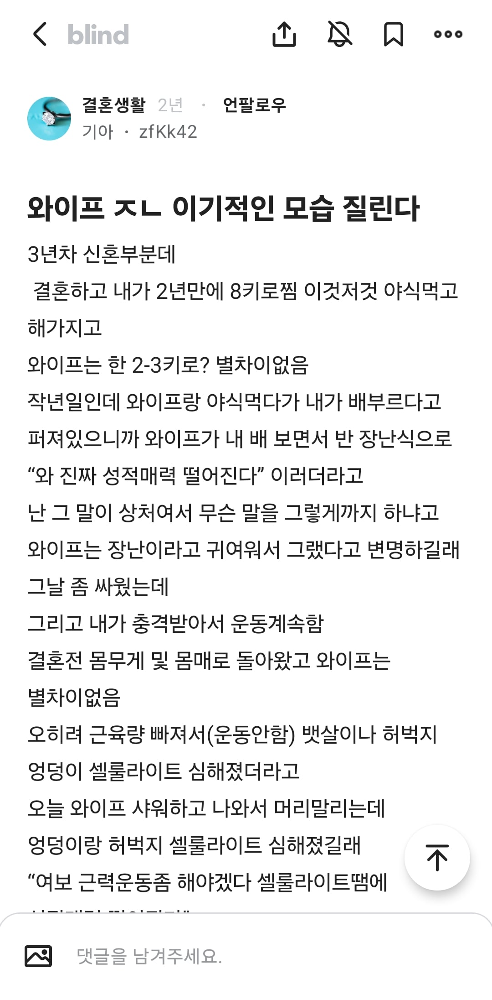
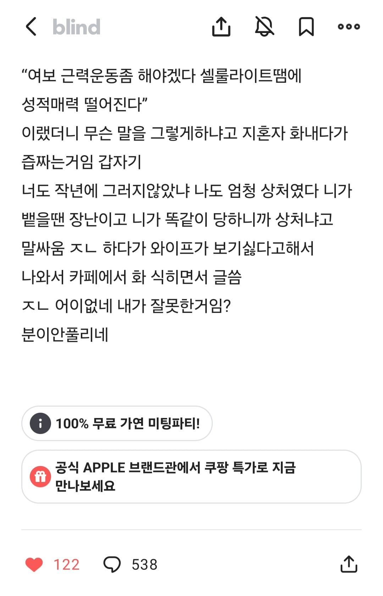
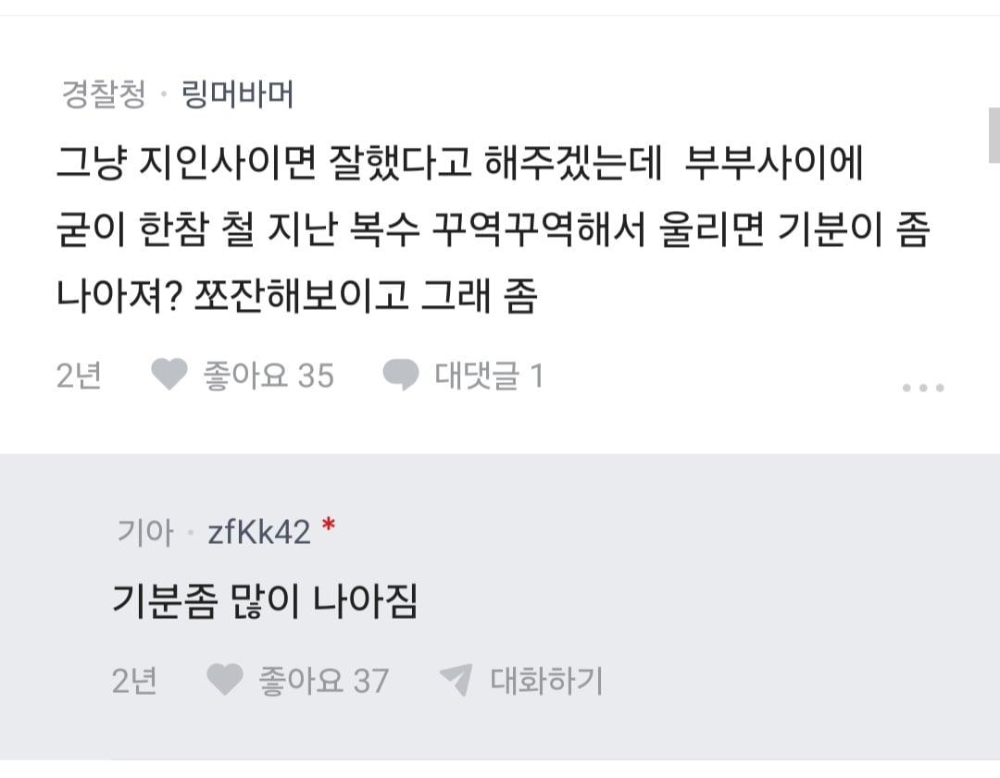
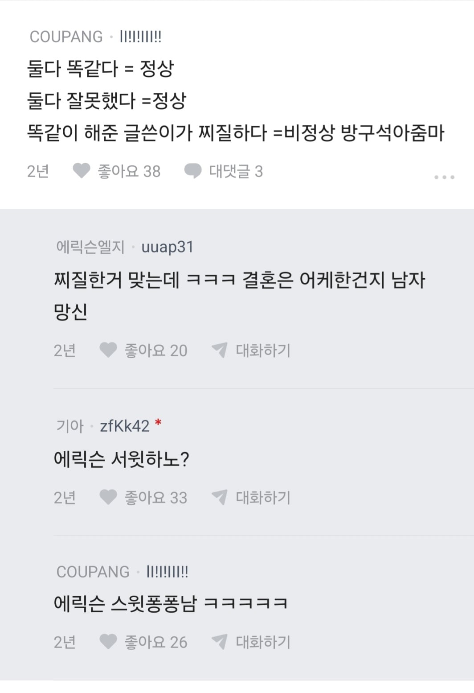

ㅋㅋㅋ 속이 시원한 기아좌




ㅋㅋㅋ 속이 시원한 기아좌
남자의 대응도 그렇게 유쾌하지는 않은데
어자들도 알아야하는게 남자들도 상처 받음 ㅋㅋㅋㅋㅋ
당연한 이야기인데, 이걸 너무 쉽게 보는 경우가 많아
뭐 그래서 남자도 나도 상처받았고 니가 한 말이잖아. 나오는거고
여자 입장에서는 그냥 쉽게 생각한걸 자기가 당하니까 이건 좀 아닌데 지는건 싫고...
아무리 부부라도 저렇게 ㅈ같이 말하는 것도 문제고
자기 상처 받았던걸 똑같이 1년 뒤에 꺼낸 것도 문제임
둘 다 미성숙해 보임...
끼리끼리 잘만났노 ㅋㅋ
저기 저 둘은 '부부'인데요..? 둘다 이상한거지 누가 잘했다 못했다가 아닌데...